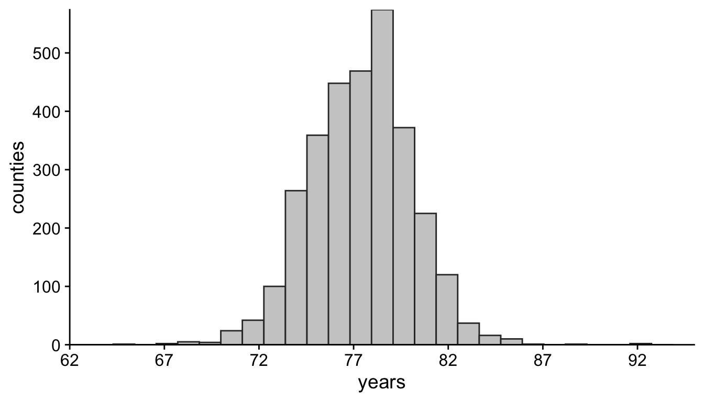
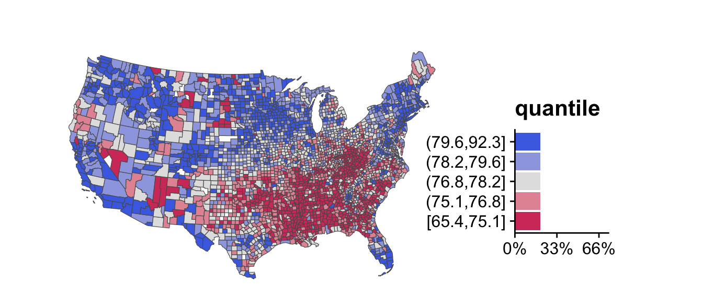
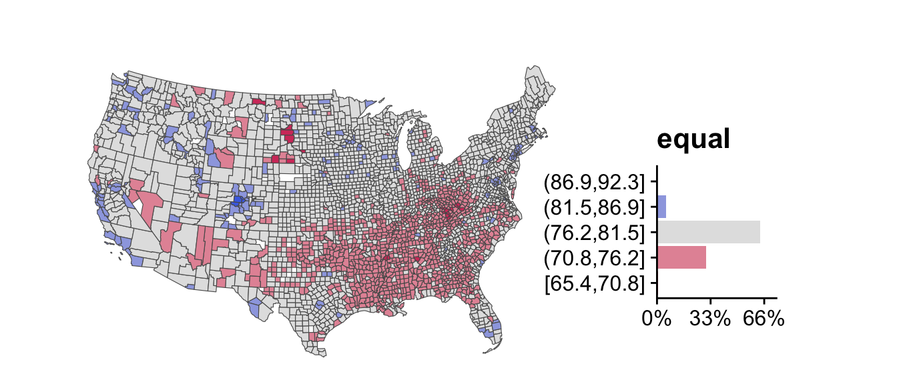
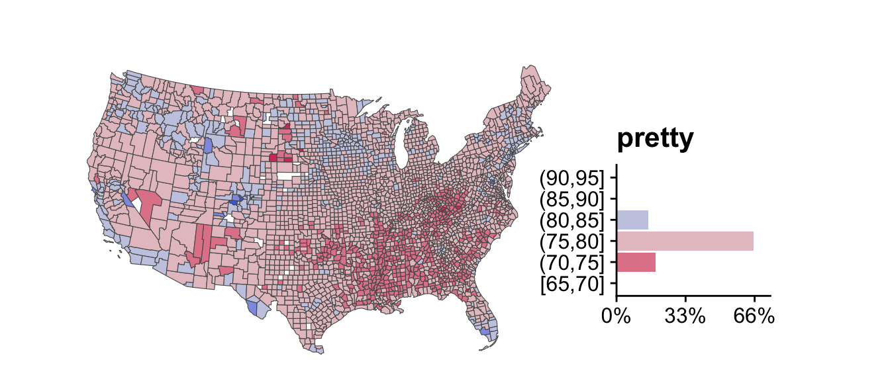
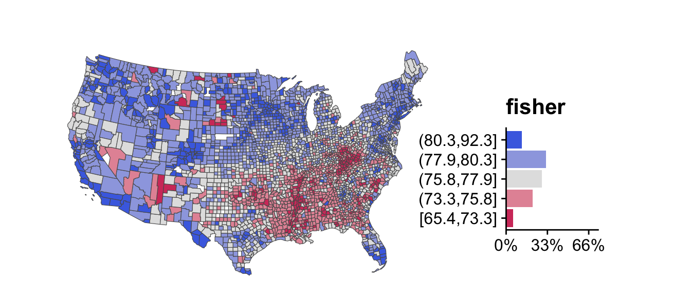
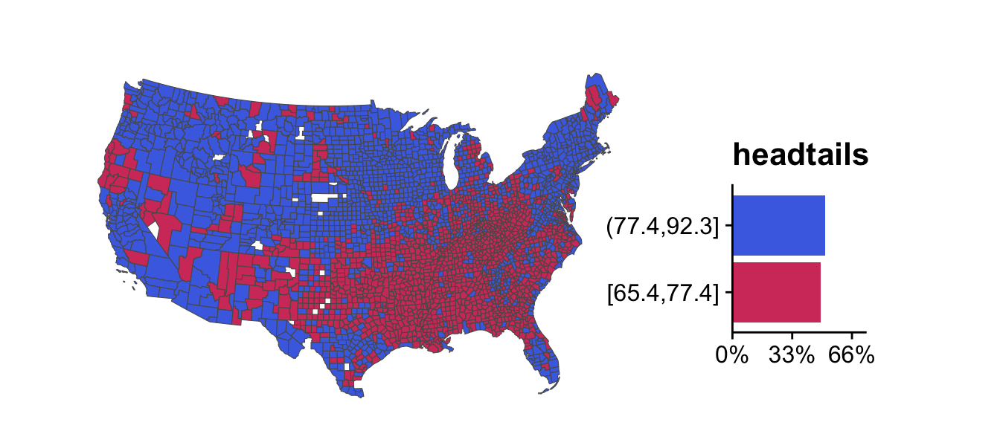
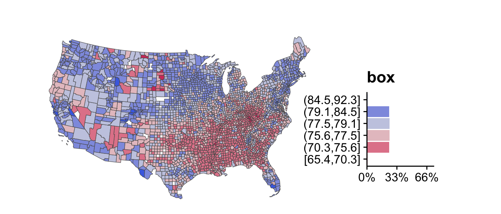

<!DOCTYPE html>
<html xmlns="http://www.w3.org/1999/xhtml" lang="en" xml:lang="en"><head>

<meta charset="utf-8">
<meta name="generator" content="quarto-1.6.40">

<meta name="viewport" content="width=device-width, initial-scale=1.0, user-scalable=yes">


<title>Binning – Maps with R</title>
<style>
code{white-space: pre-wrap;}
span.smallcaps{font-variant: small-caps;}
div.columns{display: flex; gap: min(4vw, 1.5em);}
div.column{flex: auto; overflow-x: auto;}
div.hanging-indent{margin-left: 1.5em; text-indent: -1.5em;}
ul.task-list{list-style: none;}
ul.task-list li input[type="checkbox"] {
  width: 0.8em;
  margin: 0 0.8em 0.2em -1em; /* quarto-specific, see https://github.com/quarto-dev/quarto-cli/issues/4556 */ 
  vertical-align: middle;
}
/* CSS for syntax highlighting */
pre > code.sourceCode { white-space: pre; position: relative; }
pre > code.sourceCode > span { line-height: 1.25; }
pre > code.sourceCode > span:empty { height: 1.2em; }
.sourceCode { overflow: visible; }
code.sourceCode > span { color: inherit; text-decoration: inherit; }
div.sourceCode { margin: 1em 0; }
pre.sourceCode { margin: 0; }
@media screen {
div.sourceCode { overflow: auto; }
}
@media print {
pre > code.sourceCode { white-space: pre-wrap; }
pre > code.sourceCode > span { display: inline-block; text-indent: -5em; padding-left: 5em; }
}
pre.numberSource code
  { counter-reset: source-line 0; }
pre.numberSource code > span
  { position: relative; left: -4em; counter-increment: source-line; }
pre.numberSource code > span > a:first-child::before
  { content: counter(source-line);
    position: relative; left: -1em; text-align: right; vertical-align: baseline;
    border: none; display: inline-block;
    -webkit-touch-callout: none; -webkit-user-select: none;
    -khtml-user-select: none; -moz-user-select: none;
    -ms-user-select: none; user-select: none;
    padding: 0 4px; width: 4em;
  }
pre.numberSource { margin-left: 3em;  padding-left: 4px; }
div.sourceCode
  {   }
@media screen {
pre > code.sourceCode > span > a:first-child::before { text-decoration: underline; }
}
/* CSS for citations */
div.csl-bib-body { }
div.csl-entry {
  clear: both;
  margin-bottom: 0em;
}
.hanging-indent div.csl-entry {
  margin-left:2em;
  text-indent:-2em;
}
div.csl-left-margin {
  min-width:2em;
  float:left;
}
div.csl-right-inline {
  margin-left:2em;
  padding-left:1em;
}
div.csl-indent {
  margin-left: 2em;
}</style>


<script src="../site_libs/quarto-nav/quarto-nav.js"></script>
<script src="../site_libs/quarto-nav/headroom.min.js"></script>
<script src="../site_libs/clipboard/clipboard.min.js"></script>
<script src="../site_libs/quarto-search/autocomplete.umd.js"></script>
<script src="../site_libs/quarto-search/fuse.min.js"></script>
<script src="../site_libs/quarto-search/quarto-search.js"></script>
<meta name="quarto:offset" content="../">
<script src="../site_libs/quarto-html/quarto.js"></script>
<script src="../site_libs/quarto-html/popper.min.js"></script>
<script src="../site_libs/quarto-html/tippy.umd.min.js"></script>
<script src="../site_libs/quarto-html/anchor.min.js"></script>
<link href="../site_libs/quarto-html/tippy.css" rel="stylesheet">
<link href="../site_libs/quarto-html/quarto-syntax-highlighting-dece3bd051e391dd7205a6b15f93dc59.css" rel="stylesheet" class="quarto-color-scheme" id="quarto-text-highlighting-styles">
<link href="../site_libs/quarto-html/quarto-syntax-highlighting-dark-ed04999718f06b735b1f8009dce43b94.css" rel="prefetch" class="quarto-color-scheme quarto-color-alternate" id="quarto-text-highlighting-styles">
<script src="../site_libs/bootstrap/bootstrap.min.js"></script>
<link href="../site_libs/bootstrap/bootstrap-icons.css" rel="stylesheet">
<link href="../site_libs/bootstrap/bootstrap-3b647ff6961a1cb76cc6edada3106893.min.css" rel="stylesheet" append-hash="true" class="quarto-color-scheme" id="quarto-bootstrap" data-mode="light">
<link href="../site_libs/bootstrap/bootstrap-dark-cd5b18ffbe63931ade57f18def88ab1e.min.css" rel="prefetch" append-hash="true" class="quarto-color-scheme quarto-color-alternate" id="quarto-bootstrap" data-mode="dark">
<script src="../site_libs/quarto-contrib/glightbox/glightbox.min.js"></script>
<link href="../site_libs/quarto-contrib/glightbox/glightbox.min.css" rel="stylesheet">
<link href="../site_libs/quarto-contrib/glightbox/lightbox.css" rel="stylesheet">
<script id="quarto-search-options" type="application/json">{
  "location": "navbar",
  "copy-button": false,
  "collapse-after": 3,
  "panel-placement": "end",
  "type": "overlay",
  "limit": 50,
  "keyboard-shortcut": [
    "f",
    "/",
    "s"
  ],
  "show-item-context": false,
  "language": {
    "search-no-results-text": "No results",
    "search-matching-documents-text": "matching documents",
    "search-copy-link-title": "Copy link to search",
    "search-hide-matches-text": "Hide additional matches",
    "search-more-match-text": "more match in this document",
    "search-more-matches-text": "more matches in this document",
    "search-clear-button-title": "Clear",
    "search-text-placeholder": "",
    "search-detached-cancel-button-title": "Cancel",
    "search-submit-button-title": "Submit",
    "search-label": "Search"
  }
}</script>
<script src="../site_libs/kePrint-0.0.1/kePrint.js"></script>
<link href="../site_libs/lightable-0.0.1/lightable.css" rel="stylesheet">


</head>

<body class="nav-sidebar docked nav-fixed">

<div id="quarto-search-results"></div>
  <header id="quarto-header" class="headroom fixed-top">
    <nav class="navbar navbar-expand-lg " data-bs-theme="dark">
      <div class="navbar-container container-fluid">
            <div id="quarto-search" class="" title="Search"></div>
          <button class="navbar-toggler" type="button" data-bs-toggle="collapse" data-bs-target="#navbarCollapse" aria-controls="navbarCollapse" role="menu" aria-expanded="false" aria-label="Toggle navigation" onclick="if (window.quartoToggleHeadroom) { window.quartoToggleHeadroom(); }">
  <span class="navbar-toggler-icon"></span>
</button>
          <div class="collapse navbar-collapse" id="navbarCollapse">
            <ul class="navbar-nav navbar-nav-scroll me-auto">
  <li class="nav-item">
    <a class="nav-link" href="../index.html"> 
<span class="menu-text">Maps with R</span></a>
  </li>  
</ul>
            <ul class="navbar-nav navbar-nav-scroll ms-auto">
  <li class="nav-item">
    <a class="nav-link" href="../basics/overview.html"> 
<span class="menu-text">Basics</span></a>
  </li>  
  <li class="nav-item">
    <a class="nav-link" href="../advanced/index.html"> 
<span class="menu-text">Advanced</span></a>
  </li>  
  <li class="nav-item">
    <a class="nav-link active" href="../plotting/index.html" aria-current="page"> 
<span class="menu-text">Plotting</span></a>
  </li>  
  <li class="nav-item">
    <a class="nav-link" href="../references/index.html"> 
<span class="menu-text">References</span></a>
  </li>  
</ul>
          </div> <!-- /navcollapse -->
            <div class="quarto-navbar-tools tools-wide">
    <a href="https://twitter.com" title="" class="quarto-navigation-tool px-1" aria-label="twitter"><i class="bi bi-twitter"></i></a>
    <div class="dropdown">
      <a href="" title="" id="quarto-navigation-tool-dropdown-0" class="quarto-navigation-tool dropdown-toggle px-1" data-bs-toggle="dropdown" aria-expanded="false" role="link" aria-label=""><i class="bi bi-github"></i></a>
      <ul class="dropdown-menu" aria-labelledby="quarto-navigation-tool-dropdown-0">
          <li>
            <a class="dropdown-item quarto-navbar-tools-item" href="https://code.com">
            Source Code
            </a>
          </li>
          <li>
            <a class="dropdown-item quarto-navbar-tools-item" href="https://bugs.com">
            Report a Bug
            </a>
          </li>
      </ul>
    </div>
  <a href="" class="quarto-color-scheme-toggle quarto-navigation-tool  px-1" onclick="window.quartoToggleColorScheme(); return false;" title="Toggle dark mode"><i class="bi"></i></a>
</div>
      </div> <!-- /container-fluid -->
    </nav>
  <nav class="quarto-secondary-nav">
    <div class="container-fluid d-flex">
      <button type="button" class="quarto-btn-toggle btn" data-bs-toggle="collapse" role="button" data-bs-target=".quarto-sidebar-collapse-item" aria-controls="quarto-sidebar" aria-expanded="false" aria-label="Toggle sidebar navigation" onclick="if (window.quartoToggleHeadroom) { window.quartoToggleHeadroom(); }">
        <i class="bi bi-layout-text-sidebar-reverse"></i>
      </button>
        <nav class="quarto-page-breadcrumbs" aria-label="breadcrumb"><ol class="breadcrumb"><li class="breadcrumb-item"><a href="../plotting/index.html">General Concepts</a></li><li class="breadcrumb-item"><a href="../plotting/016-plotting.html">016: Binning</a></li></ol></nav>
        <a class="flex-grow-1" role="navigation" data-bs-toggle="collapse" data-bs-target=".quarto-sidebar-collapse-item" aria-controls="quarto-sidebar" aria-expanded="false" aria-label="Toggle sidebar navigation" onclick="if (window.quartoToggleHeadroom) { window.quartoToggleHeadroom(); }">      
        </a>
      <button type="button" class="btn quarto-search-button" aria-label="Search" onclick="window.quartoOpenSearch();">
        <i class="bi bi-search"></i>
      </button>
    </div>
  </nav>
</header>
<!-- content -->
<div id="quarto-content" class="quarto-container page-columns page-rows-contents page-layout-article page-navbar">
<!-- sidebar -->
  <nav id="quarto-sidebar" class="sidebar collapse collapse-horizontal quarto-sidebar-collapse-item sidebar-navigation docked overflow-auto">
        <div class="mt-2 flex-shrink-0 align-items-center">
        <div class="sidebar-search">
        <div id="quarto-search" class="" title="Search"></div>
        </div>
        </div>
    <div class="sidebar-menu-container"> 
    <ul class="list-unstyled mt-1">
        <li class="sidebar-item sidebar-item-section">
      <div class="sidebar-item-container"> 
            <a href="../plotting/index.html" class="sidebar-item-text sidebar-link">
 <span class="menu-text">General Concepts</span></a>
          <a class="sidebar-item-toggle text-start" data-bs-toggle="collapse" data-bs-target="#quarto-sidebar-section-1" role="navigation" aria-expanded="true" aria-label="Toggle section">
            <i class="bi bi-chevron-right ms-2"></i>
          </a> 
      </div>
      <ul id="quarto-sidebar-section-1" class="collapse list-unstyled sidebar-section depth1 show">  
          <li class="sidebar-item">
  <div class="sidebar-item-container"> 
  <a href="../plotting/010-plotting.html" class="sidebar-item-text sidebar-link">
 <span class="menu-text">010: Maps</span></a>
  </div>
</li>
          <li class="sidebar-item">
  <div class="sidebar-item-container"> 
  <a href="../plotting/011-plotting.html" class="sidebar-item-text sidebar-link">
 <span class="menu-text">011: Elements</span></a>
  </div>
</li>
          <li class="sidebar-item">
  <div class="sidebar-item-container"> 
  <a href="../plotting/012-plotting.html" class="sidebar-item-text sidebar-link">
 <span class="menu-text">012: Aesthetics</span></a>
  </div>
</li>
          <li class="sidebar-item">
  <div class="sidebar-item-container"> 
  <a href="../plotting/013-plotting.html" class="sidebar-item-text sidebar-link">
 <span class="menu-text">013: Data Structures</span></a>
  </div>
</li>
          <li class="sidebar-item">
  <div class="sidebar-item-container"> 
  <a href="../plotting/014-plotting.html" class="sidebar-item-text sidebar-link">
 <span class="menu-text">014: Color</span></a>
  </div>
</li>
          <li class="sidebar-item">
  <div class="sidebar-item-container"> 
  <a href="../plotting/015-plotting.html" class="sidebar-item-text sidebar-link">
 <span class="menu-text">015: Choropleths</span></a>
  </div>
</li>
          <li class="sidebar-item">
  <div class="sidebar-item-container"> 
  <a href="../plotting/016-plotting.html" class="sidebar-item-text sidebar-link active">
 <span class="menu-text">016: Binning</span></a>
  </div>
</li>
      </ul>
  </li>
        <li class="sidebar-item sidebar-item-section">
      <div class="sidebar-item-container"> 
            <a class="sidebar-item-text sidebar-link text-start" data-bs-toggle="collapse" data-bs-target="#quarto-sidebar-section-2" role="navigation" aria-expanded="true">
 <span class="menu-text">Static Maps</span></a>
          <a class="sidebar-item-toggle text-start" data-bs-toggle="collapse" data-bs-target="#quarto-sidebar-section-2" role="navigation" aria-expanded="true" aria-label="Toggle section">
            <i class="bi bi-chevron-right ms-2"></i>
          </a> 
      </div>
      <ul id="quarto-sidebar-section-2" class="collapse list-unstyled sidebar-section depth1 show">  
          <li class="sidebar-item">
  <div class="sidebar-item-container"> 
  <a href="../plotting/020-plotting.html" class="sidebar-item-text sidebar-link">
 <span class="menu-text">020: base</span></a>
  </div>
</li>
          <li class="sidebar-item sidebar-item-section">
      <div class="sidebar-item-container"> 
            <a class="sidebar-item-text sidebar-link text-start collapsed" data-bs-toggle="collapse" data-bs-target="#quarto-sidebar-section-3" role="navigation" aria-expanded="false">
 <span class="menu-text">030: ggplot2</span></a>
          <a class="sidebar-item-toggle text-start collapsed" data-bs-toggle="collapse" data-bs-target="#quarto-sidebar-section-3" role="navigation" aria-expanded="false" aria-label="Toggle section">
            <i class="bi bi-chevron-right ms-2"></i>
          </a> 
      </div>
      <ul id="quarto-sidebar-section-3" class="collapse list-unstyled sidebar-section depth2 ">  
          <li class="sidebar-item">
  <div class="sidebar-item-container"> 
  <a href="../plotting/031-plotting.html" class="sidebar-item-text sidebar-link">
 <span class="menu-text">031: Square Land</span></a>
  </div>
</li>
          <li class="sidebar-item">
  <div class="sidebar-item-container"> 
  <a href="../plotting/032-plotting.html" class="sidebar-item-text sidebar-link">
 <span class="menu-text">032: Text and Labels</span></a>
  </div>
</li>
          <li class="sidebar-item">
  <div class="sidebar-item-container"> 
  <a href="../plotting/033-plotting.html" class="sidebar-item-text sidebar-link">
 <span class="menu-text">033: New Zealand</span></a>
  </div>
</li>
          <li class="sidebar-item">
  <div class="sidebar-item-container"> 
  <a href="../plotting/034-plotting.html" class="sidebar-item-text sidebar-link">
 <span class="menu-text">034: United States</span></a>
  </div>
</li>
      </ul>
  </li>
          <li class="sidebar-item">
  <div class="sidebar-item-container"> 
  <a href="../plotting/040-plotting.html" class="sidebar-item-text sidebar-link">
 <span class="menu-text">040: tmap</span></a>
  </div>
</li>
      </ul>
  </li>
        <li class="sidebar-item sidebar-item-section">
      <div class="sidebar-item-container"> 
            <a class="sidebar-item-text sidebar-link text-start" data-bs-toggle="collapse" data-bs-target="#quarto-sidebar-section-4" role="navigation" aria-expanded="true">
 <span class="menu-text">Interactive Maps</span></a>
          <a class="sidebar-item-toggle text-start" data-bs-toggle="collapse" data-bs-target="#quarto-sidebar-section-4" role="navigation" aria-expanded="true" aria-label="Toggle section">
            <i class="bi bi-chevron-right ms-2"></i>
          </a> 
      </div>
      <ul id="quarto-sidebar-section-4" class="collapse list-unstyled sidebar-section depth1 show">  
          <li class="sidebar-item sidebar-item-section">
      <div class="sidebar-item-container"> 
            <a class="sidebar-item-text sidebar-link text-start collapsed" data-bs-toggle="collapse" data-bs-target="#quarto-sidebar-section-5" role="navigation" aria-expanded="false">
 <span class="menu-text">050: Leaflet</span></a>
          <a class="sidebar-item-toggle text-start collapsed" data-bs-toggle="collapse" data-bs-target="#quarto-sidebar-section-5" role="navigation" aria-expanded="false" aria-label="Toggle section">
            <i class="bi bi-chevron-right ms-2"></i>
          </a> 
      </div>
      <ul id="quarto-sidebar-section-5" class="collapse list-unstyled sidebar-section depth2 ">  
          <li class="sidebar-item">
  <div class="sidebar-item-container"> 
  <a href="../plotting/051-plotting.qmd" class="sidebar-item-text sidebar-link">
 <span class="menu-text">051: Basics</span></a>
  </div>
</li>
          <li class="sidebar-item">
  <div class="sidebar-item-container"> 
  <a href="../plotting/052-plotting.qmd" class="sidebar-item-text sidebar-link">
 <span class="menu-text">052: Choropleth</span></a>
  </div>
</li>
      </ul>
  </li>
          <li class="sidebar-item">
  <div class="sidebar-item-container"> 
  <a href="../plotting/060-plotting.qmd" class="sidebar-item-text sidebar-link">
 <span class="menu-text">060: Mapview</span></a>
  </div>
</li>
          <li class="sidebar-item sidebar-item-section">
      <div class="sidebar-item-container"> 
            <a class="sidebar-item-text sidebar-link text-start collapsed" data-bs-toggle="collapse" data-bs-target="#quarto-sidebar-section-6" role="navigation" aria-expanded="false">
 <span class="menu-text">070: Mapdeck</span></a>
          <a class="sidebar-item-toggle text-start collapsed" data-bs-toggle="collapse" data-bs-target="#quarto-sidebar-section-6" role="navigation" aria-expanded="false" aria-label="Toggle section">
            <i class="bi bi-chevron-right ms-2"></i>
          </a> 
      </div>
      <ul id="quarto-sidebar-section-6" class="collapse list-unstyled sidebar-section depth2 ">  
          <li class="sidebar-item">
  <div class="sidebar-item-container"> 
  <a href="../plotting/071-plotting.qmd" class="sidebar-item-text sidebar-link">
 <span class="menu-text">071: Basic</span></a>
  </div>
</li>
          <li class="sidebar-item">
  <div class="sidebar-item-container"> 
  <a href="../plotting/072-plotting.qmd" class="sidebar-item-text sidebar-link">
 <span class="menu-text">072: Advanced</span></a>
  </div>
</li>
          <li class="sidebar-item">
  <div class="sidebar-item-container"> 
  <a href="../plotting/073-plotting.qmd" class="sidebar-item-text sidebar-link">
 <span class="menu-text">073: Hexagons</span></a>
  </div>
</li>
      </ul>
  </li>
          <li class="sidebar-item">
  <div class="sidebar-item-container"> 
  <a href="../plotting/080-plotting.qmd" class="sidebar-item-text sidebar-link">
 <span class="menu-text">080: FlowmapBlue</span></a>
  </div>
</li>
          <li class="sidebar-item">
  <div class="sidebar-item-container"> 
  <a href="../plotting/090-plotting.qmd" class="sidebar-item-text sidebar-link">
 <span class="menu-text">090: Shiny</span></a>
  </div>
</li>
      </ul>
  </li>
    </ul>
    </div>
</nav>
<div id="quarto-sidebar-glass" class="quarto-sidebar-collapse-item" data-bs-toggle="collapse" data-bs-target=".quarto-sidebar-collapse-item"></div>
<!-- margin-sidebar -->
    <div id="quarto-margin-sidebar" class="sidebar margin-sidebar">
        <nav id="TOC" role="doc-toc" class="toc-active" data-toc-expanded="99">
    <h2 id="toc-title">On this page</h2>
   
  <ul class="collapse">
  <li><a href="#objective" id="toc-objective" class="nav-link active" data-scroll-target="#objective"><span class="header-section-number">1</span> Objective</a></li>
  <li><a href="#introduction" id="toc-introduction" class="nav-link" data-scroll-target="#introduction"><span class="header-section-number">2</span> Introduction</a></li>
  <li><a href="#previous-research" id="toc-previous-research" class="nav-link" data-scroll-target="#previous-research"><span class="header-section-number">3</span> Previous Research</a>
  <ul class="collapse">
  <li><a href="#general" id="toc-general" class="nav-link" data-scroll-target="#general"><span class="header-section-number">3.1</span> General</a></li>
  <li><a href="#sec-brewer-pickle" id="toc-sec-brewer-pickle" class="nav-link" data-scroll-target="#sec-brewer-pickle"><span class="header-section-number">3.2</span> Brewer and Pickle</a></li>
  </ul></li>
  <li><a href="#intervals" id="toc-intervals" class="nav-link" data-scroll-target="#intervals"><span class="header-section-number">4</span> Intervals</a></li>
  <li><a href="#functions" id="toc-functions" class="nav-link" data-scroll-target="#functions"><span class="header-section-number">5</span> Functions</a>
  <ul class="collapse">
  <li><a href="#cut" id="toc-cut" class="nav-link" data-scroll-target="#cut"><span class="header-section-number">5.1</span> <code>cut()</code></a></li>
  <li><a href="#cut_" id="toc-cut_" class="nav-link" data-scroll-target="#cut_"><span class="header-section-number">5.2</span> <code>cut_*()</code></a></li>
  <li><a href="#classintervals" id="toc-classintervals" class="nav-link" data-scroll-target="#classintervals"><span class="header-section-number">5.3</span> <code>classIntervals()</code></a></li>
  </ul></li>
  <li><a href="#life-expectancy" id="toc-life-expectancy" class="nav-link" data-scroll-target="#life-expectancy"><span class="header-section-number">6</span> Life Expectancy</a>
  <ul class="collapse">
  <li><a href="#quantiles" id="toc-quantiles" class="nav-link" data-scroll-target="#quantiles"><span class="header-section-number">6.1</span> Quantiles</a></li>
  <li><a href="#equal" id="toc-equal" class="nav-link" data-scroll-target="#equal"><span class="header-section-number">6.2</span> Equal</a></li>
  <li><a href="#pretty" id="toc-pretty" class="nav-link" data-scroll-target="#pretty"><span class="header-section-number">6.3</span> Pretty</a></li>
  <li><a href="#fisher-jenks" id="toc-fisher-jenks" class="nav-link" data-scroll-target="#fisher-jenks"><span class="header-section-number">6.4</span> Fisher-Jenks</a></li>
  <li><a href="#headtails" id="toc-headtails" class="nav-link" data-scroll-target="#headtails"><span class="header-section-number">6.5</span> Headtails</a></li>
  <li><a href="#box" id="toc-box" class="nav-link" data-scroll-target="#box"><span class="header-section-number">6.6</span> Box</a></li>
  </ul></li>
  <li><a href="#precision" id="toc-precision" class="nav-link" data-scroll-target="#precision"><span class="header-section-number">7</span> Precision</a></li>
  <li><a href="#key-points" id="toc-key-points" class="nav-link" data-scroll-target="#key-points"><span class="header-section-number">8</span> Key Points</a></li>
  </ul>
<div class="toc-actions"><ul class="collapse"><li><a href="https://github.com/quarto-dev/quarto-demo/edit/main/plotting/016-plotting.qmd" class="toc-action"><i class="bi bi-github"></i>Edit this page</a></li><li><a href="https://github.com/quarto-dev/quarto-demo/issues/new" class="toc-action"><i class="bi empty"></i>Report an issue</a></li></ul></div></nav>
    </div>
<!-- main -->
<main class="content" id="quarto-document-content">

<header id="title-block-header" class="quarto-title-block default"><nav class="quarto-page-breadcrumbs quarto-title-breadcrumbs d-none d-lg-block" aria-label="breadcrumb"><ol class="breadcrumb"><li class="breadcrumb-item"><a href="../plotting/index.html">General Concepts</a></li><li class="breadcrumb-item"><a href="../plotting/016-plotting.html">016: Binning</a></li></ol></nav>
<div class="quarto-title">
<h1 class="title">Binning</h1>
</div>


<div class="quarto-title-meta">

    
  
    
  </div>
  


</header>


<div class="cell" data-layout-align="center">
<div class="sourceCode cell-code" id="cb1"><pre class="sourceCode numberSource r number-lines code-with-copy"><code class="sourceCode r"><span id="cb1-1"><a href="#cb1-1"></a><span class="fu">library</span>(classInt)</span>
<span id="cb1-2"><a href="#cb1-2"></a><span class="fu">library</span>(colorspace)</span>
<span id="cb1-3"><a href="#cb1-3"></a><span class="fu">library</span>(cowplot)</span>
<span id="cb1-4"><a href="#cb1-4"></a><span class="fu">library</span>(dplyr)</span>
<span id="cb1-5"><a href="#cb1-5"></a><span class="fu">library</span>(ggplot2)</span>
<span id="cb1-6"><a href="#cb1-6"></a><span class="fu">library</span>(magrittr)</span>
<span id="cb1-7"><a href="#cb1-7"></a><span class="fu">library</span>(kableExtra)</span>
<span id="cb1-8"><a href="#cb1-8"></a><span class="fu">library</span>(sf)</span></code><button title="Copy to Clipboard" class="code-copy-button"><i class="bi"></i></button></pre></div>
</div>
<section id="objective" class="level1" data-number="1">
<h1 data-number="1"><span class="header-section-number">1</span> Objective</h1>
<p>The objective for this section is to cut a continuous variable into bins. This is also referred to as “discretizing” the data.</p>
</section>
<section id="introduction" class="level1" data-number="2">
<h1 data-number="2"><span class="header-section-number">2</span> Introduction</h1>
<p>How polygons of a choropleth map are colored is left to the subjective judgment of its creator. The color, in turn, is assigned to the polygon based upon which bin it is placed. The number and breadth of the bins are determined manually by the creator or mathematically by an algorithm. Some of the algorithms are simple; some are not. The conversion of a continuous variable into a discrete one is a common data science procedure. The R-package universe offers at least three ways to discretize the data. A great way to begin is to review <em>R for Data Science</em>. <span class="citation" data-cites="wickham_data_2024">(<a href="#ref-wickham_data_2024" role="doc-biblioref">Wickham et al., 2024</a>)</span></p>
<p>A common question about choropleths is how the polygons were assigned to a category. An intimate knowledge of binning and classification methods will be required to respond in a helpful, credible way. Here, we’ll review previous literature, discuss interval notation, explore helpful functions in R, show different intervals using a life expectancy example, and touch on the topic of precision.</p>
</section>
<section id="previous-research" class="level1" data-number="3">
<h1 data-number="3"><span class="header-section-number">3</span> Previous Research</h1>
<section id="general" class="level2" data-number="3.1">
<h2 data-number="3.1" class="anchored" data-anchor-id="general"><span class="header-section-number">3.1</span> General</h2>
<p>Early debates in cartography centered on whether mapping should be of a continuous or discrete variable. The matter is largely resolved with consensus being in favor of discrete variables. <span class="citation" data-cites="schneider_criteriabased_2023">(<a href="#ref-schneider_criteriabased_2023" role="doc-biblioref">Schneider et al., 2023</a>)</span> The next question is how many classifications are necessary. Some authors have suggested five to seven can be “well distinguished” and recalled. <span class="citation" data-cites="schneider_criteriabased_2023">(<a href="#ref-schneider_criteriabased_2023" role="doc-biblioref">Schneider et al., 2023</a>)</span> Schneider and others <span class="citation" data-cites="schneider_criteriabased_2023">(<a href="#ref-schneider_criteriabased_2023" role="doc-biblioref">2023</a>)</span> advocated that the number of categories should be dependent on the underlying data and be chosen in a way to maximize insight. When choosing intervals, the most basic approaches divide the interval into equal lengths or place an equal number of observations into each bin.</p>
<p>While easy to explain and interpret, these strategies overlook nuances in the distribution like skewness and clustering. <span class="citation" data-cites="schneider_criteriabased_2023">(<a href="#ref-schneider_criteriabased_2023" role="doc-biblioref">Schneider et al., 2023</a>)</span> More sophisticated, mathematical algorithms exist to divide the interval. The most common approach was proposed in statistics by W.D. Fisher <span class="citation" data-cites="fisher_grouping_1958">(<a href="#ref-fisher_grouping_1958" role="doc-biblioref">1958</a>)</span> and in geography by George Jenks <span class="citation" data-cites="jenks_generalization_1963">(<a href="#ref-jenks_generalization_1963" role="doc-biblioref">1963</a>)</span> . This approach attempts to find the split of the data that minimizes the variance of points within each class <span class="citation" data-cites="schneider_criteriabased_2023 brewer_evaluation_2002">(<a href="#ref-brewer_evaluation_2002" role="doc-biblioref">Brewer &amp; Pickle, 2002</a>; <a href="#ref-schneider_criteriabased_2023" role="doc-biblioref">Schneider et al., 2023</a>)</span> For a description of George Jenks’ impact in cartography, see <span class="citation" data-cites="mcmaster_history_2002">(<a href="#ref-mcmaster_history_2002" role="doc-biblioref">McMaster &amp; McMaster, 2002</a>)</span>. McMasters and others <span class="citation" data-cites="mcmaster_history_2002">(<a href="#ref-mcmaster_history_2002" role="doc-biblioref">2002</a>)</span> proposed the following three criteria within the context of earthquake hazard maps:</p>
<blockquote class="blockquote">
<ol type="1">
<li><em>Likeness.</em> The classes in the classification scheme should contain all data that are alike, based on a quantitative measure, and should break apart data that are not alike.</li>
</ol>
</blockquote>
<blockquote class="blockquote">
<ol start="2" type="1">
<li><em>Sufficiency and completeness.</em> There should be enough (but not too many) scale breaks in order to be able to immediately see the primary patterns in the data.</li>
</ol>
</blockquote>
<blockquote class="blockquote">
<ol start="3" type="1">
<li><em>Signification.</em> Scale breaks should ideally signify meaningful values or changes in the distribution rather than arbitrarily selected values.</li>
</ol>
</blockquote>
</section>
<section id="sec-brewer-pickle" class="level2" data-number="3.2">
<h2 data-number="3.2" class="anchored" data-anchor-id="sec-brewer-pickle"><span class="header-section-number">3.2</span> Brewer and Pickle</h2>
<p>Brewer and Pickle <span class="citation" data-cites="brewer_evaluation_2002">(<a href="#ref-brewer_evaluation_2002" role="doc-biblioref">2002</a>)</span> compared seven classification methods using responses from 55 Penn State students involving choropleth maps based on U.S. mortality data. An important part of this study was that the respondents were asked questions about individual maps and asked to make comparisons across series of maps. Thus, common scales and coloring schemes aided interpretation when comparing multiple maps. Having previously used quantiles–a somewhat simplistic approach– in the preparation of previous mortality maps, the authors were asked to revisit whether more sophisticated classification methods, like Fisher/Jenks, were more appropriate when looking at a series of maps. Stating that “the results may surprise cartographers”, Brewer and Pickle <span class="citation" data-cites="brewer_evaluation_2002">(<a href="#ref-brewer_evaluation_2002" role="doc-biblioref">2002</a>)</span> found that the simplest method —quantiles— trumped the other methods:</p>
<blockquote class="blockquote">
<p>“Quantiles seem to be one of the best methods for facilitating comparison as well as aiding general map-reading. The rational advantages of <strong>careful optimization processes seem to offer no benefit over the simpler quantile method</strong> for the general map-reading tasks” (<a href="zotero://select/library/items/4GKEJEFN">Brewer and Pickle, 2002, p.&nbsp;679</a>) (<a href="zotero://open-pdf/library/items/VRA4PTMT?page=18&amp;annotation=HNBGPZQU">pdf</a>)</p>
</blockquote>
<p>The authors expanded on their finding noting that there were hints throughout the cartographic literature that quantile methods are robust. The failure of other methods was ascribed to the middle classes holding a large portion of the data: boxplot and standard deviation having the largest portion of middle values. <span class="citation" data-cites="brewer_evaluation_2002">(<a href="#ref-brewer_evaluation_2002" role="doc-biblioref">Brewer &amp; Pickle, 2002</a>)</span></p>
<div class="cell" data-layout-align="center">
<div id="tbl-brewer-results" class="cell quarto-float quarto-figure quarto-figure-center anchored" data-layout-align="center">
<figure class="quarto-float quarto-float-tbl figure">
<figcaption class="quarto-float-caption-top quarto-float-caption quarto-float-tbl" id="tbl-brewer-results-caption-0ceaefa1-69ba-4598-a22c-09a6ac19f8ca">
Table&nbsp;1: Results from Brewer and Pickle <span class="citation" data-cites="brewer_evaluation_2002">(<a href="#ref-brewer_evaluation_2002" role="doc-biblioref">2002</a>)</span>. Description edited for brevity.
</figcaption>
<div aria-describedby="tbl-brewer-results-caption-0ceaefa1-69ba-4598-a22c-09a6ac19f8ca">
<div class="cell-output-display">
<table class="do-not-create-environment cell caption-top table table-sm table-striped small" data-quarto-postprocess="true">
<thead>
<tr class="header">
<th style="text-align: left;" data-quarto-table-cell-role="th">Classification Method</th>
<th style="text-align: left;" data-quarto-table-cell-role="th">Overall Accuracy</th>
<th style="text-align: left;" data-quarto-table-cell-role="th">Description</th>
</tr>
</thead>
<tbody>
<tr class="odd">
<td style="text-align: left;">Quantile</td>
<td style="text-align: left;">75.6%</td>
<td style="text-align: left;">The quantile method places equal numbers of observations into each class. For example, an interval cut into five classes would have twenty percent of the observations in each class.</td>
</tr>
<tr class="even">
<td style="text-align: left;">Minimum Boundary Error</td>
<td style="text-align: left;">72.6%</td>
<td style="text-align: left;">The minimum-boundary-error method is an iterative optimizing method. The spatial distribution or topology of the observations is considered, rather than their statistical distribution.</td>
</tr>
<tr class="odd">
<td style="text-align: left;">Natural Breaks (Jenks)</td>
<td style="text-align: left;">69.9%</td>
<td style="text-align: left;">The natural-breaks method is the implementation of the Jenks optimization procedure. The optimization minimized within-class variance and maximized between-class variance in an iterative series of calculations.</td>
</tr>
<tr class="even">
<td style="text-align: left;">Hybrid equal interval</td>
<td style="text-align: left;">69.4%</td>
<td style="text-align: left;">The hybrid equal interval classification that was developed used the upper whisker of a box plot to define the highest category of outliers. The remaining range of the data below the upper whisker was divided into equal intervals.</td>
</tr>
<tr class="odd">
<td style="text-align: left;">Standard deviation</td>
<td style="text-align: left;">67.6%</td>
<td style="text-align: left;">The standard deviation classification had a middle class centered on the mean with a range of 1 standard deviation (0.5 standard deviation to either side of the mean). Classes above and below this mean class were also one standard deviation in range, from (0.5 to 1.5) standard deviations. The high and low classes contained remaining data that fell outside 1.5 standard deviations.</td>
</tr>
<tr class="even">
<td style="text-align: left;">Shared area</td>
<td style="text-align: left;">66.4%</td>
<td style="text-align: left;">The shared-area method used an ordered list of polygons ranked by data value to accumulate specific land areas in each class. With five classes, the extreme classes each covered ten percent of the map area.</td>
</tr>
<tr class="odd">
<td style="text-align: left;">Box plot</td>
<td style="text-align: left;">64.6%</td>
<td style="text-align: left;">The box-plot-based method had a middle class containing data in the interquartile range (the middle 50 percent of the data straddling the median). The adjacent classes extended from the hinges of the box plot to the whiskers, and the extreme classes contained outside and extreme values beyond the whiskers.</td>
</tr>
</tbody>
</table>


</div>
</div>
</figure>
</div>
</div>
</section>
</section>
<section id="intervals" class="level1" data-number="4">
<h1 data-number="4"><span class="header-section-number">4</span> Intervals</h1>
<p>Intervals are easy if the distinction between the brackett <code>[</code> and the parentheses <code>(</code> are remembered. In math, a <em>real interval</em> is the set of all numbers lying between two endpoints. An interval can contain neither endpoint, one endpoint or both endpoints. An <em>open interval</em> contains no endpoints and is denoted with parentheses. To illustrate, an open interval defined as <code>(0, 1)</code> includes all values greater than 0 and less than 1.</p>
<p>A <em>closed interval</em> contains both endpoints and is denoted by brackets. A closed interval defined as <code>[0, 1]</code> includes 0, all values between 0 and 1, and 1. The endpoints are included when the bracket is used. Brackets and parentheses can be used together, and often are, when defining multiple breaks. An interval is said to <em>left-closed</em> when a bracket is used on the left, i.e., <code>[0, 1)</code> and <em>right-closed</em> when a bracket is on the right, i.e., <code>(0, 1]</code>).</p>
<p><code>R</code> will often return multiple intervals as breaks. For example, <code>[0, 1] (1, 2]</code> means all values from and including 0 up to and including 1 are assigned to the first break while all values above 1 and up to and including 2 are assigned to the second break.</p>
</section>
<section id="functions" class="level1" data-number="5">
<h1 data-number="5"><span class="header-section-number">5</span> Functions</h1>
<p>The first function for discussion is the <code>cut()</code> function in the base package; the second function is the family of <code>cut_*()</code> functions in the <code>ggplot2</code> package; and the third is the <code>classIntervals()</code> function in the <code>classInt</code> package.</p>
<section id="cut" class="level2" data-number="5.1">
<h2 data-number="5.1" class="anchored" data-anchor-id="cut"><span class="header-section-number">5.1</span> <code>cut()</code></h2>
<p>The <code>base</code> package includes the <code>cut()</code> function. Many of the gritty details of the <code>cut()</code> function are inspected since it is the foundation for the other functions. The arguments to the <code>cut()</code> function can be used in the <code>ggplot2</code> version too. Aside from the object to be segmented, the function contains five arguments:</p>
<ol type="1">
<li><code>breaks</code></li>
<li><code>labels</code></li>
<li><code>include.lowest</code></li>
<li><code>right</code></li>
<li><code>ordered_result</code></li>
</ol>
<p>Assuming the <code>labels</code> argument is unspecified, the factor level labels will read <code>(b1, b2] (b2, b3]</code>, where <strong>b</strong> is for break. Here, all numbers greater than “b1” up to and including “b2” will be in the first break while all numbers greater than “b2” and up to and including “b3” will be in the second break. If <code>ordered_result = T</code>, then the factor level labels will read <code>(b1, b2] &lt; (b2, b3]</code>. The numbers in the first break are less than the numbers in the second break.</p>
<p>Let’s begin with a continuous array of five numbers arranged from 99 to 102. Pay special attention to the end points 99 and 102 to see which interval, if at all, they are assigned.</p>
<div class="cell" data-layout-align="center">
<div class="sourceCode cell-code" id="cb2"><pre class="sourceCode numberSource r number-lines code-with-copy"><code class="sourceCode r"><span id="cb2-1"><a href="#cb2-1"></a>(numbers <span class="ot">&lt;-</span> <span class="fu">c</span>(<span class="dv">99</span>, <span class="fl">99.5</span><span class="sc">:</span><span class="fl">101.5</span>, <span class="dv">102</span>))</span>
<span id="cb2-2"><a href="#cb2-2"></a><span class="co">#&gt; [1]  99.0  99.5 100.5 101.5 102.0</span></span></code><button title="Copy to Clipboard" class="code-copy-button"><i class="bi"></i></button></pre></div>
</div>
<p><code>breaks</code> can either be a single number for the number of bins or a vector of cut points. Below, each number is assigned to one of three intervals. 99 is assigned to the first interval, while 102 is assigned to the last.</p>
<div class="cell" data-layout-align="center">
<div class="sourceCode cell-code" id="cb3"><pre class="sourceCode numberSource r number-lines code-with-copy"><code class="sourceCode r"><span id="cb3-1"><a href="#cb3-1"></a><span class="fu">cut</span>(numbers, <span class="at">breaks =</span> <span class="dv">3</span>)</span>
<span id="cb3-2"><a href="#cb3-2"></a><span class="co">#&gt; [1] (99,100]  (99,100]  (100,101] (101,102] (101,102]</span></span>
<span id="cb3-3"><a href="#cb3-3"></a><span class="co">#&gt; Levels: (99,100] (100,101] (101,102]</span></span></code><button title="Copy to Clipboard" class="code-copy-button"><i class="bi"></i></button></pre></div>
</div>
<p>The breaks or cut points can be explicitly set. Where the breaks are set the number 99 is set to <code>NA</code>. This would seem to be handled inconsistently.</p>
<div class="cell" data-layout-align="center">
<div class="sourceCode cell-code" id="cb4"><pre class="sourceCode numberSource r number-lines code-with-copy"><code class="sourceCode r"><span id="cb4-1"><a href="#cb4-1"></a><span class="fu">cut</span>(numbers, <span class="at">breaks =</span> <span class="dv">99</span><span class="sc">:</span><span class="dv">102</span>)</span>
<span id="cb4-2"><a href="#cb4-2"></a><span class="co">#&gt; [1] &lt;NA&gt;      (99,100]  (100,101] (101,102] (101,102]</span></span>
<span id="cb4-3"><a href="#cb4-3"></a><span class="co">#&gt; Levels: (99,100] (100,101] (101,102]</span></span></code><button title="Copy to Clipboard" class="code-copy-button"><i class="bi"></i></button></pre></div>
</div>
<p>However, the <code>cut()</code> details section states that, in the case of a single number, the outer limits are “moved away by 0.1% of the range to ensure that the extreme values both fall within the break intervals.” Thus, 99 was included where <code>breaks = 3</code>, but set to <code>NA</code> when set explicitly. Where a number is outside the intervals, then it is set to <code>NA</code> as are <code>NaN</code> and <code>Inf</code>.</p>
<div class="cell" data-layout-align="center">
<div class="sourceCode cell-code" id="cb5"><pre class="sourceCode numberSource r number-lines code-with-copy"><code class="sourceCode r"><span id="cb5-1"><a href="#cb5-1"></a><span class="fu">cut</span>(<span class="fu">c</span>(<span class="cn">NA</span>, <span class="cn">NaN</span>, <span class="cn">Inf</span>, <span class="sc">-</span><span class="cn">Inf</span>, numbers, <span class="dv">104</span>), <span class="at">breaks =</span> <span class="dv">99</span><span class="sc">:</span><span class="dv">102</span>)</span>
<span id="cb5-2"><a href="#cb5-2"></a><span class="co">#&gt;  [1] &lt;NA&gt;      &lt;NA&gt;      &lt;NA&gt;      &lt;NA&gt;      &lt;NA&gt;      (99,100]  (100,101]</span></span>
<span id="cb5-3"><a href="#cb5-3"></a><span class="co">#&gt;  [8] (101,102] (101,102] &lt;NA&gt;     </span></span>
<span id="cb5-4"><a href="#cb5-4"></a><span class="co">#&gt; Levels: (99,100] (100,101] (101,102]</span></span></code><button title="Copy to Clipboard" class="code-copy-button"><i class="bi"></i></button></pre></div>
</div>
<p>If the lowest value in the sequence is equal to the first break point, it can be included by specifying <code>include.lowest = T</code>. Note that the lowest value is no longer set to <code>NA</code>, but the first interval and it begins with a <code>[</code>.</p>
<div class="cell" data-layout-align="center">
<div class="sourceCode cell-code" id="cb6"><pre class="sourceCode numberSource r number-lines code-with-copy"><code class="sourceCode r"><span id="cb6-1"><a href="#cb6-1"></a><span class="fu">cut</span>(numbers, <span class="at">breaks =</span> <span class="dv">99</span><span class="sc">:</span><span class="dv">102</span>, <span class="at">include.lowest =</span> T)</span>
<span id="cb6-2"><a href="#cb6-2"></a><span class="co">#&gt; [1] [99,100]  [99,100]  (100,101] (101,102] (101,102]</span></span>
<span id="cb6-3"><a href="#cb6-3"></a><span class="co">#&gt; Levels: [99,100] (100,101] (101,102]</span></span></code><button title="Copy to Clipboard" class="code-copy-button"><i class="bi"></i></button></pre></div>
</div>
<p>The interval’s endpoints can be reversed by change the default behavior from <code>right = T</code> to <code>right = F</code>.</p>
<div class="cell" data-layout-align="center">
<div class="sourceCode cell-code" id="cb7"><pre class="sourceCode numberSource r number-lines code-with-copy"><code class="sourceCode r"><span id="cb7-1"><a href="#cb7-1"></a><span class="co"># default</span></span>
<span id="cb7-2"><a href="#cb7-2"></a><span class="fu">cut</span>(numbers, <span class="at">breaks =</span> <span class="dv">99</span><span class="sc">:</span><span class="dv">102</span>, <span class="at">include.lowest =</span> T, <span class="at">right =</span> T)</span>
<span id="cb7-3"><a href="#cb7-3"></a><span class="co">#&gt; [1] [99,100]  [99,100]  (100,101] (101,102] (101,102]</span></span>
<span id="cb7-4"><a href="#cb7-4"></a><span class="co">#&gt; Levels: [99,100] (100,101] (101,102]</span></span></code><button title="Copy to Clipboard" class="code-copy-button"><i class="bi"></i></button></pre></div>
</div>
<p>Notice that the brackets above have changed from <code>(100,101]</code> above to <code>[100,101)</code> below.</p>
<div class="cell" data-layout-align="center">
<div class="sourceCode cell-code" id="cb8"><pre class="sourceCode numberSource r number-lines code-with-copy"><code class="sourceCode r"><span id="cb8-1"><a href="#cb8-1"></a><span class="co"># not default</span></span>
<span id="cb8-2"><a href="#cb8-2"></a><span class="fu">cut</span>(numbers, <span class="at">breaks =</span> <span class="dv">99</span><span class="sc">:</span><span class="dv">102</span>, <span class="at">include.lowest =</span> T, <span class="at">right =</span> F)</span>
<span id="cb8-3"><a href="#cb8-3"></a><span class="co">#&gt; [1] [99,100)  [99,100)  [100,101) [101,102] [101,102]</span></span>
<span id="cb8-4"><a href="#cb8-4"></a><span class="co">#&gt; Levels: [99,100) [100,101) [101,102]</span></span></code><button title="Copy to Clipboard" class="code-copy-button"><i class="bi"></i></button></pre></div>
</div>
<p>Finally, labels will be added.</p>
<div class="cell" data-layout-align="center">
<div class="sourceCode cell-code" id="cb9"><pre class="sourceCode numberSource r number-lines code-with-copy"><code class="sourceCode r"><span id="cb9-1"><a href="#cb9-1"></a><span class="fu">cut</span>(numbers, </span>
<span id="cb9-2"><a href="#cb9-2"></a>    <span class="at">breaks =</span> <span class="dv">99</span><span class="sc">:</span><span class="dv">102</span>,</span>
<span id="cb9-3"><a href="#cb9-3"></a>    <span class="at">include.lowest =</span> T,</span>
<span id="cb9-4"><a href="#cb9-4"></a>    <span class="at">labels =</span> <span class="fu">c</span>(<span class="st">"low"</span>, <span class="st">"avg"</span>, <span class="st">"high"</span>))</span>
<span id="cb9-5"><a href="#cb9-5"></a><span class="co">#&gt; [1] low  low  avg  high high</span></span>
<span id="cb9-6"><a href="#cb9-6"></a><span class="co">#&gt; Levels: low avg high</span></span></code><button title="Copy to Clipboard" class="code-copy-button"><i class="bi"></i></button></pre></div>
</div>
</section>
<section id="cut_" class="level2" data-number="5.2">
<h2 data-number="5.2" class="anchored" data-anchor-id="cut_"><span class="header-section-number">5.2</span> <code>cut_*()</code></h2>
<p><code>ggplot</code> contains three functions to bin data:</p>
<ul>
<li><code>cut_interval()</code> makes <code>n</code> groups with equal range</li>
<li><code>cut_number()</code> makes <code>n</code> groups with equal numbers of observations</li>
<li><code>cut_width()</code> makes groups of a set width</li>
</ul>
<p>Rather than using an array like in the preceding section, the <code>ggplot2</code> functions will be illustrated using a tibble/dataframe as this will likely mimic the common workflow.</p>
<div class="cell" data-layout-align="center">
<div class="sourceCode cell-code" id="cb10"><pre class="sourceCode numberSource r number-lines code-with-copy"><code class="sourceCode r"><span id="cb10-1"><a href="#cb10-1"></a>(dt <span class="ot">&lt;-</span> tibble<span class="sc">::</span><span class="fu">tibble</span>(<span class="at">numbers =</span> numbers))</span>
<span id="cb10-2"><a href="#cb10-2"></a><span class="co">#&gt; # A tibble: 5 × 1</span></span>
<span id="cb10-3"><a href="#cb10-3"></a><span class="co">#&gt;   numbers</span></span>
<span id="cb10-4"><a href="#cb10-4"></a><span class="co">#&gt;     &lt;dbl&gt;</span></span>
<span id="cb10-5"><a href="#cb10-5"></a><span class="co">#&gt; 1    99  </span></span>
<span id="cb10-6"><a href="#cb10-6"></a><span class="co">#&gt; 2    99.5</span></span>
<span id="cb10-7"><a href="#cb10-7"></a><span class="co">#&gt; 3   100. </span></span>
<span id="cb10-8"><a href="#cb10-8"></a><span class="co">#&gt; 4   102. </span></span>
<span id="cb10-9"><a href="#cb10-9"></a><span class="co">#&gt; 5   102</span></span></code><button title="Copy to Clipboard" class="code-copy-button"><i class="bi"></i></button></pre></div>
</div>
<p>Below each column illustrates one of the <code>ggplot2::cut_*()</code> functions.</p>
<div class="cell" data-layout-align="center">
<div class="sourceCode cell-code" id="cb11"><pre class="sourceCode numberSource r number-lines code-with-copy"><code class="sourceCode r"><span id="cb11-1"><a href="#cb11-1"></a>dt <span class="sc">%&gt;%</span> </span>
<span id="cb11-2"><a href="#cb11-2"></a>    <span class="fu">mutate</span>(<span class="at">eq_range =</span> <span class="fu">cut_interval</span>(numbers, <span class="at">n =</span> <span class="dv">3</span>)) <span class="sc">%&gt;%</span> </span>
<span id="cb11-3"><a href="#cb11-3"></a>    <span class="fu">mutate</span>(<span class="at">eq_number =</span> <span class="fu">cut_number</span>(numbers, <span class="at">n =</span> <span class="dv">3</span>)) <span class="sc">%&gt;%</span> </span>
<span id="cb11-4"><a href="#cb11-4"></a>    <span class="fu">mutate</span>(<span class="at">width =</span> <span class="fu">cut_width</span>(numbers, <span class="at">width =</span> <span class="dv">1</span>)) <span class="sc">%&gt;%</span> </span>
<span id="cb11-5"><a href="#cb11-5"></a>    <span class="fu">mutate</span>(<span class="at">labels =</span> <span class="fu">cut_width</span>(numbers, <span class="at">width =</span> <span class="dv">1</span>, </span>
<span id="cb11-6"><a href="#cb11-6"></a>                              <span class="at">labels =</span> <span class="fu">c</span>(<span class="st">"a"</span>, <span class="st">"b"</span>,<span class="st">"c"</span>, <span class="st">"d"</span>))) <span class="sc">%&gt;%</span> </span>
<span id="cb11-7"><a href="#cb11-7"></a>    kableExtra<span class="sc">::</span><span class="fu">kbl</span>()</span></code><button title="Copy to Clipboard" class="code-copy-button"><i class="bi"></i></button></pre></div>
<div class="cell-output-display">
<table class="caption-top table table-sm table-striped small" data-quarto-postprocess="true">
<thead>
<tr class="header">
<th style="text-align: right;" data-quarto-table-cell-role="th">numbers</th>
<th style="text-align: left;" data-quarto-table-cell-role="th">eq_range</th>
<th style="text-align: left;" data-quarto-table-cell-role="th">eq_number</th>
<th style="text-align: left;" data-quarto-table-cell-role="th">width</th>
<th style="text-align: left;" data-quarto-table-cell-role="th">labels</th>
</tr>
</thead>
<tbody>
<tr class="odd">
<td style="text-align: right;">99.0</td>
<td style="text-align: left;">[99,100]</td>
<td style="text-align: left;">[99,99.8]</td>
<td style="text-align: left;">[98.5,99.5]</td>
<td style="text-align: left;">a</td>
</tr>
<tr class="even">
<td style="text-align: right;">99.5</td>
<td style="text-align: left;">[99,100]</td>
<td style="text-align: left;">[99,99.8]</td>
<td style="text-align: left;">[98.5,99.5]</td>
<td style="text-align: left;">a</td>
</tr>
<tr class="odd">
<td style="text-align: right;">100.5</td>
<td style="text-align: left;">(100,101]</td>
<td style="text-align: left;">(99.8,101]</td>
<td style="text-align: left;">(99.5,100.5]</td>
<td style="text-align: left;">b</td>
</tr>
<tr class="even">
<td style="text-align: right;">101.5</td>
<td style="text-align: left;">(101,102]</td>
<td style="text-align: left;">(101,102]</td>
<td style="text-align: left;">(100.5,101.5]</td>
<td style="text-align: left;">c</td>
</tr>
<tr class="odd">
<td style="text-align: right;">102.0</td>
<td style="text-align: left;">(101,102]</td>
<td style="text-align: left;">(101,102]</td>
<td style="text-align: left;">(101.5,102.5]</td>
<td style="text-align: left;">d</td>
</tr>
</tbody>
</table>


</div>
</div>
</section>
<section id="classintervals" class="level2" data-number="5.3">
<h2 data-number="5.3" class="anchored" data-anchor-id="classintervals"><span class="header-section-number">5.3</span> <code>classIntervals()</code></h2>
<p>The <code>classInt</code> package includes the <code>classIntervals()</code> function. According to the documentation, it “provides a uniform interface to finding class intervals for continuous numerical variables” and can be used to choose colors and symbols. The styles available to cut the interval include “fixed”, “sd”, “equal”, “pretty”, “quantile”, “kmeans”, “hclust”, “bclust”, “fisher”, “jenks”, “dpih”, “headtails”, “maximum”, or “box”.</p>
</section>
</section>
<section id="life-expectancy" class="level1" data-number="6">
<h1 data-number="6"><span class="header-section-number">6</span> Life Expectancy</h1>
<p>The publisher for the life expectancy data is the Institute of Health Metrics and Evaluation in Seattle, Washington. <span class="citation" data-cites="imhe_mortality_2023">(<a href="#ref-imhe_mortality_2023" role="doc-biblioref">Institute for Health Metrics and Evaluation (IMHE), 2023</a>)</span> The data was winnowed to include all gender, all race life expectancy of U.S. residents at less than one year of age, excluding Alaska and Hawaii. Before building the choropleth map, the overall life expectancy distibution will be examined. The average life expectancy is 77.41 years so the x-axis was labeled so that 77 was demarcated.</p>
<div class="cell" data-layout-align="center">
<div class="cell-output-display">
<div id="fig-2019-us-life-exp-by-bounty" class="quarto-float quarto-figure quarto-figure-center anchored" data-fig-pos="t" data-fig-align="center">
<figure class="quarto-float quarto-float-fig figure">
<div aria-describedby="fig-2019-us-life-exp-by-bounty-caption-0ceaefa1-69ba-4598-a22c-09a6ac19f8ca">
<a href="../figures/fig-2019-us-life-exp-by-bounty-1.png" class="lightbox" data-gallery="quarto-lightbox-gallery-1" title="Figure&nbsp;1: 2019 U.S. Life Expectancy by County."></a>
</div>
<figcaption class="quarto-float-caption-bottom quarto-float-caption quarto-float-fig" id="fig-2019-us-life-exp-by-bounty-caption-0ceaefa1-69ba-4598-a22c-09a6ac19f8ca">
Figure&nbsp;1: 2019 U.S. Life Expectancy by County.
</figcaption>
</figure>
</div>
</div>
</div>
<p>Because the methods that <code>ggplot2</code> uses to cut an interval are duplicated in the <code>classInt</code> package, only the functions in the <code>classInt</code> package will be plotted. Five bins were created. Some of the methods did not produce sufficient contrast as to be helpful and were dropped.</p>
<section id="quantiles" class="level2" data-number="6.1">
<h2 data-number="6.1" class="anchored" data-anchor-id="quantiles"><span class="header-section-number">6.1</span> Quantiles</h2>
<p>The “quantile” style provides quantile breaks; arguments to quantile may be passed through the function. This style is the equivalent to the <code>ggplot2::cut_number()</code> function. If the reader will recall, this style was also the highest performing algorithm in Brewer and Pickle <span class="citation" data-cites="brewer_evaluation_2002">(<a href="#ref-brewer_evaluation_2002" role="doc-biblioref">2002</a>)</span> in <a href="#tbl-brewer-results" class="quarto-xref">Table&nbsp;1</a>.</p>
<div class="cell" data-layout-align="center">
<div class="cell-output-display">
<div id="fig-life-exp-quantiles" class="quarto-float quarto-figure quarto-figure-center anchored" data-fig-pos="t" data-fig-align="center">
<figure class="quarto-float quarto-float-fig figure">
<div aria-describedby="fig-life-exp-quantiles-caption-0ceaefa1-69ba-4598-a22c-09a6ac19f8ca">
<a href="../figures/fig-life-exp-quantiles-1.png" class="lightbox" data-gallery="quarto-lightbox-gallery-2" title="Figure&nbsp;2: 2019 U.S. Life Expectancy with quantiles style."></a>
</div>
<figcaption class="quarto-float-caption-bottom quarto-float-caption quarto-float-fig" id="fig-life-exp-quantiles-caption-0ceaefa1-69ba-4598-a22c-09a6ac19f8ca">
Figure&nbsp;2: 2019 U.S. Life Expectancy with quantiles style.
</figcaption>
</figure>
</div>
</div>
</div>
</section>
<section id="equal" class="level2" data-number="6.2">
<h2 data-number="6.2" class="anchored" data-anchor-id="equal"><span class="header-section-number">6.2</span> Equal</h2>
<p>The “equal” style divides the range of the variable into n parts. The equivalent in <code>ggplot2</code> is the <code>cut_interval()</code> function. As opposed to the vibrant and contrasting colors in the quantiles plot above, the “equal” style looks flat. The reason is that the bulk of the observations are clustered in the middle. This was a problem described in the Brewer and Pickle study <span class="citation" data-cites="brewer_evaluation_2002">(<a href="#ref-brewer_evaluation_2002" role="doc-biblioref">2002</a>)</span>.</p>
<div class="cell" data-layout-align="center">
<div class="cell-output-display">
<div id="fig-life-exp-equal" class="quarto-float quarto-figure quarto-figure-center anchored" data-fig-pos="t" data-fig-align="center">
<figure class="quarto-float quarto-float-fig figure">
<div aria-describedby="fig-life-exp-equal-caption-0ceaefa1-69ba-4598-a22c-09a6ac19f8ca">
<a href="../figures/fig-life-exp-equal-1.png" class="lightbox" data-gallery="quarto-lightbox-gallery-3" title="Figure&nbsp;3: 2019 U.S. Life Expectancy with equal style."></a>
</div>
<figcaption class="quarto-float-caption-bottom quarto-float-caption quarto-float-fig" id="fig-life-exp-equal-caption-0ceaefa1-69ba-4598-a22c-09a6ac19f8ca">
Figure&nbsp;3: 2019 U.S. Life Expectancy with equal style.
</figcaption>
</figure>
</div>
</div>
</div>
</section>
<section id="pretty" class="level2" data-number="6.3">
<h2 data-number="6.3" class="anchored" data-anchor-id="pretty"><span class="header-section-number">6.3</span> Pretty</h2>
<p>The “pretty” style chooses a number of breaks not necessarily equal to <code>n</code> using pretty, but likely to be legible; arguments to pretty may be passed through. While the legend breaks are pretty due to rounding, the colors are flat since the observations clustered in the <code>(80, 75]</code> breaks.</p>
<div class="cell" data-layout-align="center">
<div class="cell-output-display">
<div id="fig-life-exp-pretty" class="quarto-float quarto-figure quarto-figure-center anchored" data-fig-pos="t" data-fig-align="center">
<figure class="quarto-float quarto-float-fig figure">
<div aria-describedby="fig-life-exp-pretty-caption-0ceaefa1-69ba-4598-a22c-09a6ac19f8ca">
<a href="../figures/fig-life-exp-pretty-1.png" class="lightbox" data-gallery="quarto-lightbox-gallery-4" title="Figure&nbsp;4: 2019 U.S. Life Expectancy with pretty style."></a>
</div>
<figcaption class="quarto-float-caption-bottom quarto-float-caption quarto-float-fig" id="fig-life-exp-pretty-caption-0ceaefa1-69ba-4598-a22c-09a6ac19f8ca">
Figure&nbsp;4: 2019 U.S. Life Expectancy with pretty style.
</figcaption>
</figure>
</div>
</div>
</div>
</section>
<section id="fisher-jenks" class="level2" data-number="6.4">
<h2 data-number="6.4" class="anchored" data-anchor-id="fisher-jenks"><span class="header-section-number">6.4</span> Fisher-Jenks</h2>
<p>Use the “fisher” style in the <code>classInterval()</code> function. There is confusion around the “jenks” algorithm because of its opaque origin and the convuluted code associated with it. <span class="citation" data-cites="charlton_choropleth_2016">(<a href="#ref-charlton_choropleth_2016" role="doc-biblioref">Charlton &amp; Brunsdon, 2016</a>)</span> The confusion persists because the “jenks” algorithm is the default option for choropleths in commercial mapping software. Interestingly, George Jenks himself was not confused stating,</p>
<blockquote class="blockquote">
<p>It is the author’s view that the Fisher algorithm is the best external grouping technique. The algorithm was first proposed by W.D. Fisher in a paper entitled, “On Grouping for Maximum Homogeneity.” <span class="citation" data-cites="jenks_optimal_1977">(<a href="#ref-jenks_optimal_1977" role="doc-biblioref">Jenks, 1977</a>)</span></p>
</blockquote>
<p>The good news is that either algorithm produces an attractive plot and has been widely used for decades.</p>
<div class="cell" data-layout-align="center">
<div class="cell-output-display">
<div id="fig-life-exp-fisher" class="quarto-float quarto-figure quarto-figure-center anchored" data-fig-pos="t" data-fig-align="center">
<figure class="quarto-float quarto-float-fig figure">
<div aria-describedby="fig-life-exp-fisher-caption-0ceaefa1-69ba-4598-a22c-09a6ac19f8ca">
<a href="../figures/fig-life-exp-fisher-1.png" class="lightbox" data-gallery="quarto-lightbox-gallery-5" title="Figure&nbsp;5: 2019 U.S. Life Expectancy with Fisher style."></a>
</div>
<figcaption class="quarto-float-caption-bottom quarto-float-caption quarto-float-fig" id="fig-life-exp-fisher-caption-0ceaefa1-69ba-4598-a22c-09a6ac19f8ca">
Figure&nbsp;5: 2019 U.S. Life Expectancy with Fisher style.
</figcaption>
</figure>
</div>
</div>
</div>
</section>
<section id="headtails" class="level2" data-number="6.5">
<h2 data-number="6.5" class="anchored" data-anchor-id="headtails"><span class="header-section-number">6.5</span> Headtails</h2>
<p>The “headtails” style uses the algorithm proposed by Bin Jiang <span class="citation" data-cites="jiang_head_2013">(<a href="#ref-jiang_head_2013" role="doc-biblioref">2013</a>)</span>, in order to find groupings or hierarchy for data with a heavy-tailed distribution. This classification scheme partitions all of the data values around the mean into two parts and continues the process iteratively for the values (above the mean) in the head until the head part values are no longer heavy-tailed distributed.</p>
<div class="cell" data-layout-align="center">
<div class="cell-output-display">
<div id="fig-life-exp-headtails" class="quarto-float quarto-figure quarto-figure-center anchored" data-fig-pos="t" data-fig-align="center">
<figure class="quarto-float quarto-float-fig figure">
<div aria-describedby="fig-life-exp-headtails-caption-0ceaefa1-69ba-4598-a22c-09a6ac19f8ca">
<a href="../figures/fig-life-exp-headtails-1.png" class="lightbox" data-gallery="quarto-lightbox-gallery-6" title="Figure&nbsp;6: 2019 U.S. Life Expectancy with Headtails style."></a>
</div>
<figcaption class="quarto-float-caption-bottom quarto-float-caption quarto-float-fig" id="fig-life-exp-headtails-caption-0ceaefa1-69ba-4598-a22c-09a6ac19f8ca">
Figure&nbsp;6: 2019 U.S. Life Expectancy with Headtails style.
</figcaption>
</figure>
</div>
</div>
</div>
</section>
<section id="box" class="level2" data-number="6.6">
<h2 data-number="6.6" class="anchored" data-anchor-id="box"><span class="header-section-number">6.6</span> Box</h2>
<p>The “box” style generates 7 breaks (therefore 6 categories) based on a box-and-whisker plot. First and last categories include the data values considered as outliers, and the four remaining categories are defined by the percentiles 25, 50 and 75 of the data distribution. By default, the identification of outliers is based on the interquantile range (IQR), so values lower than percentile 25 - 1.5 * IQR or higher than percentile 75 + 1.5 * IQR are considered as outliers.</p>
<div class="cell" data-layout-align="center">
<div class="cell-output-display">
<div id="fig-life-exp-box" class="quarto-float quarto-figure quarto-figure-center anchored" data-fig-pos="t" data-fig-align="center">
<figure class="quarto-float quarto-float-fig figure">
<div aria-describedby="fig-life-exp-box-caption-0ceaefa1-69ba-4598-a22c-09a6ac19f8ca">
<a href="../figures/fig-life-exp-box-1.png" class="lightbox" data-gallery="quarto-lightbox-gallery-7" title="Figure&nbsp;7: 2019 U.S. Life Expectancy with Box style."></a>
</div>
<figcaption class="quarto-float-caption-bottom quarto-float-caption quarto-float-fig" id="fig-life-exp-box-caption-0ceaefa1-69ba-4598-a22c-09a6ac19f8ca">
Figure&nbsp;7: 2019 U.S. Life Expectancy with Box style.
</figcaption>
</figure>
</div>
</div>
</div>
</section>
</section>
<section id="precision" class="level1" data-number="7">
<h1 data-number="7"><span class="header-section-number">7</span> Precision</h1>
<p>Much has been written about precision. Readers have difficulty remembering results when more than one digit is included after the decimal. “1.1%” is preferred to “1.11111%”. One study looked at the way authors presented percentages in academic journals. Of the 43,000 reported percents, authors used too many decimal places 33% of the time and too few 12% of the time. <span class="citation" data-cites="barnett_missing_2018">(<a href="#ref-barnett_missing_2018" role="doc-biblioref">Barnett, 2018</a>)</span> Choosing the number of significant digits to report can be subjective; however, helpful guidelines exist. <span class="citation" data-cites="cole_too_2015">(<a href="#ref-cole_too_2015" role="doc-biblioref">Cole, 2015</a>)</span> Reporting standards differ by profession, style guide, and statistical context. Here, the context is to assign polygons to one of, perhaps, six bins and include a helpful legend. The cramped space of a map legend is a poor place to demonstrate precision to the <em>nth</em> place. The <code>dig.lab</code> argument within the <code>cut</code> function can be set to zero or one. The default is three.</p>
</section>
<section id="key-points" class="level1" data-number="8">
<h1 data-number="8"><span class="header-section-number">8</span> Key Points</h1>
<ul>
<li><p>Plot a histogram of the variable to be segmented</p></li>
<li><p>Use no fewer than 4 nor more than 7 bins without a good reason</p></li>
<li><p>For normally distributed data that requires comparisons between different maps, use the “quantiles” method</p></li>
<li><p>For non-normal distributions, use the “quantiles” method and compare it to an optimal classification method like “fisher” or “headtails”</p></li>
<li><p>Consider keeping no more than one digit after the decimal place in the legend</p></li>
<li><p>Relabel the factor variable only at the very end of the project</p></li>
<li><p>If after discreting the data, the number of <code>NA</code>s increases, you should inspect the data further to determine its cause</p></li>
</ul>
<hr>
<div id="refs-plotting-016-rspatial" class="references csl-bib-body hanging-indent" data-entry-spacing="0" data-line-spacing="2" role="list">
<div id="ref-barnett_missing_2018" class="csl-entry" role="listitem">
Barnett, A. G. (2018). Missing the point: Are journals using the ideal number of decimal places? <em>F1000Research</em>, <em>7</em>, 450. <a href="https://doi.org/10.12688/f1000research.14488.3">https://doi.org/10.12688/f1000research.14488.3</a>
</div>
<div id="ref-brewer_evaluation_2002" class="csl-entry" role="listitem">
Brewer, C. A., &amp; Pickle, L. (2002). Evaluation of <span>Methods</span> for <span>Classifying Epidemiological Data</span> on <span>Choropleth Maps</span> in <span>Series</span>. <em>Annals of the Association of American Geographers</em>, <em>92</em>(4), 662–681. <a href="https://doi.org/10.1111/1467-8306.00310">https://doi.org/10.1111/1467-8306.00310</a>
</div>
<div id="ref-charlton_choropleth_2016" class="csl-entry" role="listitem">
Charlton, M., &amp; Brunsdon, C. (2016). <em>Choropleth maps considered harmful: Scale and spatial data analysis</em>. <a href="https://web.archive.org/web/20170401000000*/http://www.irlogi.ie/wp-content/uploads/2016/11/NUIM_ChoroHarmful.pdf">https://web.archive.org/web/20170401000000*/http://www.irlogi.ie/wp-content/uploads/2016/11/NUIM_ChoroHarmful.pdf</a>
</div>
<div id="ref-cole_too_2015" class="csl-entry" role="listitem">
Cole, T. J. (2015). Too many digits: The presentation of numerical data. <em>Archives of Disease in Childhood</em>, <em>100</em>(7), 608–609. <a href="https://doi.org/10.1136/archdischild-2014-307149">https://doi.org/10.1136/archdischild-2014-307149</a>
</div>
<div id="ref-fisher_grouping_1958" class="csl-entry" role="listitem">
Fisher, W. D. (1958). On grouping for maximum homogeneity. <em>Journal of the American Statistical Association</em>, <em>53</em>(284), 789–798.
</div>
<div id="ref-imhe_mortality_2023" class="csl-entry" role="listitem">
Institute for Health Metrics and Evaluation (IMHE). (2023). <em>U.<span>S</span>. <span>Mortality Rates</span> by <span>Causes</span> of <span>Death</span> and <span>Life Expectancy</span> by <span>County</span>, <span>Race</span>, and <span>Ethnicity</span> 2000-2019</em>. <a href="https://doi.org/doi.org/10.6069/3WQ2-TG23">https://doi.org/doi.org/10.6069/3WQ2-TG23</a>
</div>
<div id="ref-jenks_generalization_1963" class="csl-entry" role="listitem">
Jenks, G. F. (1963). Generalization in <span>Statistical Mapping</span>. <em>Annals of the Association of American Geographers</em>. <a href="https://www.tandfonline.com/doi/abs/10.1111/j.1467-8306.1963.tb00429.x">https://www.tandfonline.com/doi/abs/10.1111/j.1467-8306.1963.tb00429.x</a>
</div>
<div id="ref-jenks_optimal_1977" class="csl-entry" role="listitem">
Jenks, G. F. (1977). Optimal <span>Data Classification</span> for <span>Choropleth Maps</span>. <em>Occasional Paper No. 2, Lawrence, Kansas: University of Kansas, Department of Geography</em>.
</div>
<div id="ref-jiang_head_2013" class="csl-entry" role="listitem">
Jiang, B. (2013). Head/tail <span>Breaks</span>: <span>A New Classification Scheme</span> for <span>Data</span> with a <span class="nocase">Heavy-tailed Distribution</span>. <em>The Professional Geographer</em>, <em>65</em>(3), 482–494. <a href="https://doi.org/10.1080/00330124.2012.700499">https://doi.org/10.1080/00330124.2012.700499</a>
</div>
<div id="ref-mcmaster_history_2002" class="csl-entry" role="listitem">
McMaster, R., &amp; McMaster, S. (2002). A <span>History</span> of <span>Twentieth-Century American Academic Cartography</span>. <em>Cartography and Geographic Information Science</em>, <em>29</em>(3), 305–321. <a href="https://doi.org/10.1559/152304002782008486">https://doi.org/10.1559/152304002782008486</a>
</div>
<div id="ref-schneider_criteriabased_2023" class="csl-entry" role="listitem">
Schneider, M., Cotton, F., &amp; Schweizer, P.-J. (2023). Criteria-based visualization design for hazard maps. <em>Natural Hazards and Earth System Sciences</em>, <em>23</em>(7), 2505–2521. <a href="https://doi.org/10.5194/nhess-23-2505-2023">https://doi.org/10.5194/nhess-23-2505-2023</a>
</div>
<div id="ref-wickham_data_2024" class="csl-entry" role="listitem">
Wickham, H., Cetinkaya-Rundel, M., &amp; Grolemund, G. (2024). <em>R for <span>Data Science</span> (2e)</em>. <a href="https://r4ds.hadley.nz/">https://r4ds.hadley.nz/</a>
</div>
</div>
<div id="refs-plotting-016-packages" class="references csl-bib-body hanging-indent" data-entry-spacing="0" data-line-spacing="2" role="list">

</div>


</section>

</main> <!-- /main -->
<script id="quarto-html-after-body" type="application/javascript">
window.document.addEventListener("DOMContentLoaded", function (event) {
  const toggleBodyColorMode = (bsSheetEl) => {
    const mode = bsSheetEl.getAttribute("data-mode");
    const bodyEl = window.document.querySelector("body");
    if (mode === "dark") {
      bodyEl.classList.add("quarto-dark");
      bodyEl.classList.remove("quarto-light");
    } else {
      bodyEl.classList.add("quarto-light");
      bodyEl.classList.remove("quarto-dark");
    }
  }
  const toggleBodyColorPrimary = () => {
    const bsSheetEl = window.document.querySelector("link#quarto-bootstrap");
    if (bsSheetEl) {
      toggleBodyColorMode(bsSheetEl);
    }
  }
  toggleBodyColorPrimary();  
  const disableStylesheet = (stylesheets) => {
    for (let i=0; i < stylesheets.length; i++) {
      const stylesheet = stylesheets[i];
      stylesheet.rel = 'prefetch';
    }
  }
  const enableStylesheet = (stylesheets) => {
    for (let i=0; i < stylesheets.length; i++) {
      const stylesheet = stylesheets[i];
      stylesheet.rel = 'stylesheet';
    }
  }
  const manageTransitions = (selector, allowTransitions) => {
    const els = window.document.querySelectorAll(selector);
    for (let i=0; i < els.length; i++) {
      const el = els[i];
      if (allowTransitions) {
        el.classList.remove('notransition');
      } else {
        el.classList.add('notransition');
      }
    }
  }
  const toggleGiscusIfUsed = (isAlternate, darkModeDefault) => {
    const baseTheme = document.querySelector('#giscus-base-theme')?.value ?? 'light';
    const alternateTheme = document.querySelector('#giscus-alt-theme')?.value ?? 'dark';
    let newTheme = '';
    if(darkModeDefault) {
      newTheme = isAlternate ? baseTheme : alternateTheme;
    } else {
      newTheme = isAlternate ? alternateTheme : baseTheme;
    }
    const changeGiscusTheme = () => {
      // From: https://github.com/giscus/giscus/issues/336
      const sendMessage = (message) => {
        const iframe = document.querySelector('iframe.giscus-frame');
        if (!iframe) return;
        iframe.contentWindow.postMessage({ giscus: message }, 'https://giscus.app');
      }
      sendMessage({
        setConfig: {
          theme: newTheme
        }
      });
    }
    const isGiscussLoaded = window.document.querySelector('iframe.giscus-frame') !== null;
    if (isGiscussLoaded) {
      changeGiscusTheme();
    }
  }
  const toggleColorMode = (alternate) => {
    // Switch the stylesheets
    const alternateStylesheets = window.document.querySelectorAll('link.quarto-color-scheme.quarto-color-alternate');
    manageTransitions('#quarto-margin-sidebar .nav-link', false);
    if (alternate) {
      enableStylesheet(alternateStylesheets);
      for (const sheetNode of alternateStylesheets) {
        if (sheetNode.id === "quarto-bootstrap") {
          toggleBodyColorMode(sheetNode);
        }
      }
    } else {
      disableStylesheet(alternateStylesheets);
      toggleBodyColorPrimary();
    }
    manageTransitions('#quarto-margin-sidebar .nav-link', true);
    // Switch the toggles
    const toggles = window.document.querySelectorAll('.quarto-color-scheme-toggle');
    for (let i=0; i < toggles.length; i++) {
      const toggle = toggles[i];
      if (toggle) {
        if (alternate) {
          toggle.classList.add("alternate");     
        } else {
          toggle.classList.remove("alternate");
        }
      }
    }
    // Hack to workaround the fact that safari doesn't
    // properly recolor the scrollbar when toggling (#1455)
    if (navigator.userAgent.indexOf('Safari') > 0 && navigator.userAgent.indexOf('Chrome') == -1) {
      manageTransitions("body", false);
      window.scrollTo(0, 1);
      setTimeout(() => {
        window.scrollTo(0, 0);
        manageTransitions("body", true);
      }, 40);  
    }
  }
  const isFileUrl = () => { 
    return window.location.protocol === 'file:';
  }
  const hasAlternateSentinel = () => {  
    let styleSentinel = getColorSchemeSentinel();
    if (styleSentinel !== null) {
      return styleSentinel === "alternate";
    } else {
      return false;
    }
  }
  const setStyleSentinel = (alternate) => {
    const value = alternate ? "alternate" : "default";
    if (!isFileUrl()) {
      window.localStorage.setItem("quarto-color-scheme", value);
    } else {
      localAlternateSentinel = value;
    }
  }
  const getColorSchemeSentinel = () => {
    if (!isFileUrl()) {
      const storageValue = window.localStorage.getItem("quarto-color-scheme");
      return storageValue != null ? storageValue : localAlternateSentinel;
    } else {
      return localAlternateSentinel;
    }
  }
  const darkModeDefault = false;
  let localAlternateSentinel = darkModeDefault ? 'alternate' : 'default';
  // Dark / light mode switch
  window.quartoToggleColorScheme = () => {
    // Read the current dark / light value 
    let toAlternate = !hasAlternateSentinel();
    toggleColorMode(toAlternate);
    setStyleSentinel(toAlternate);
    toggleGiscusIfUsed(toAlternate, darkModeDefault);
  };
  // Ensure there is a toggle, if there isn't float one in the top right
  if (window.document.querySelector('.quarto-color-scheme-toggle') === null) {
    const a = window.document.createElement('a');
    a.classList.add('top-right');
    a.classList.add('quarto-color-scheme-toggle');
    a.href = "";
    a.onclick = function() { try { window.quartoToggleColorScheme(); } catch {} return false; };
    const i = window.document.createElement("i");
    i.classList.add('bi');
    a.appendChild(i);
    window.document.body.appendChild(a);
  }
  // Switch to dark mode if need be
  if (hasAlternateSentinel()) {
    toggleColorMode(true);
  } else {
    toggleColorMode(false);
  }
  const icon = "";
  const anchorJS = new window.AnchorJS();
  anchorJS.options = {
    placement: 'right',
    icon: icon
  };
  anchorJS.add('.anchored');
  const isCodeAnnotation = (el) => {
    for (const clz of el.classList) {
      if (clz.startsWith('code-annotation-')) {                     
        return true;
      }
    }
    return false;
  }
  const onCopySuccess = function(e) {
    // button target
    const button = e.trigger;
    // don't keep focus
    button.blur();
    // flash "checked"
    button.classList.add('code-copy-button-checked');
    var currentTitle = button.getAttribute("title");
    button.setAttribute("title", "Copied!");
    let tooltip;
    if (window.bootstrap) {
      button.setAttribute("data-bs-toggle", "tooltip");
      button.setAttribute("data-bs-placement", "left");
      button.setAttribute("data-bs-title", "Copied!");
      tooltip = new bootstrap.Tooltip(button, 
        { trigger: "manual", 
          customClass: "code-copy-button-tooltip",
          offset: [0, -8]});
      tooltip.show();    
    }
    setTimeout(function() {
      if (tooltip) {
        tooltip.hide();
        button.removeAttribute("data-bs-title");
        button.removeAttribute("data-bs-toggle");
        button.removeAttribute("data-bs-placement");
      }
      button.setAttribute("title", currentTitle);
      button.classList.remove('code-copy-button-checked');
    }, 1000);
    // clear code selection
    e.clearSelection();
  }
  const getTextToCopy = function(trigger) {
      const codeEl = trigger.previousElementSibling.cloneNode(true);
      for (const childEl of codeEl.children) {
        if (isCodeAnnotation(childEl)) {
          childEl.remove();
        }
      }
      return codeEl.innerText;
  }
  const clipboard = new window.ClipboardJS('.code-copy-button:not([data-in-quarto-modal])', {
    text: getTextToCopy
  });
  clipboard.on('success', onCopySuccess);
  if (window.document.getElementById('quarto-embedded-source-code-modal')) {
    const clipboardModal = new window.ClipboardJS('.code-copy-button[data-in-quarto-modal]', {
      text: getTextToCopy,
      container: window.document.getElementById('quarto-embedded-source-code-modal')
    });
    clipboardModal.on('success', onCopySuccess);
  }
    var localhostRegex = new RegExp(/^(?:http|https):\/\/localhost\:?[0-9]*\//);
    var mailtoRegex = new RegExp(/^mailto:/);
      var filterRegex = new RegExp("https:\/\/RobWiederstein\.github\.io\/mapswR\/");
    var isInternal = (href) => {
        return filterRegex.test(href) || localhostRegex.test(href) || mailtoRegex.test(href);
    }
    // Inspect non-navigation links and adorn them if external
 	var links = window.document.querySelectorAll('a[href]:not(.nav-link):not(.navbar-brand):not(.toc-action):not(.sidebar-link):not(.sidebar-item-toggle):not(.pagination-link):not(.no-external):not([aria-hidden]):not(.dropdown-item):not(.quarto-navigation-tool):not(.about-link)');
    for (var i=0; i<links.length; i++) {
      const link = links[i];
      if (!isInternal(link.href)) {
        // undo the damage that might have been done by quarto-nav.js in the case of
        // links that we want to consider external
        if (link.dataset.originalHref !== undefined) {
          link.href = link.dataset.originalHref;
        }
      }
    }
  function tippyHover(el, contentFn, onTriggerFn, onUntriggerFn) {
    const config = {
      allowHTML: true,
      maxWidth: 500,
      delay: 100,
      arrow: false,
      appendTo: function(el) {
          return el.parentElement;
      },
      interactive: true,
      interactiveBorder: 10,
      theme: 'quarto',
      placement: 'bottom-start',
    };
    if (contentFn) {
      config.content = contentFn;
    }
    if (onTriggerFn) {
      config.onTrigger = onTriggerFn;
    }
    if (onUntriggerFn) {
      config.onUntrigger = onUntriggerFn;
    }
    window.tippy(el, config); 
  }
  const noterefs = window.document.querySelectorAll('a[role="doc-noteref"]');
  for (var i=0; i<noterefs.length; i++) {
    const ref = noterefs[i];
    tippyHover(ref, function() {
      // use id or data attribute instead here
      let href = ref.getAttribute('data-footnote-href') || ref.getAttribute('href');
      try { href = new URL(href).hash; } catch {}
      const id = href.replace(/^#\/?/, "");
      const note = window.document.getElementById(id);
      if (note) {
        return note.innerHTML;
      } else {
        return "";
      }
    });
  }
  const xrefs = window.document.querySelectorAll('a.quarto-xref');
  const processXRef = (id, note) => {
    // Strip column container classes
    const stripColumnClz = (el) => {
      el.classList.remove("page-full", "page-columns");
      if (el.children) {
        for (const child of el.children) {
          stripColumnClz(child);
        }
      }
    }
    stripColumnClz(note)
    if (id === null || id.startsWith('sec-')) {
      // Special case sections, only their first couple elements
      const container = document.createElement("div");
      if (note.children && note.children.length > 2) {
        container.appendChild(note.children[0].cloneNode(true));
        for (let i = 1; i < note.children.length; i++) {
          const child = note.children[i];
          if (child.tagName === "P" && child.innerText === "") {
            continue;
          } else {
            container.appendChild(child.cloneNode(true));
            break;
          }
        }
        if (window.Quarto?.typesetMath) {
          window.Quarto.typesetMath(container);
        }
        return container.innerHTML
      } else {
        if (window.Quarto?.typesetMath) {
          window.Quarto.typesetMath(note);
        }
        return note.innerHTML;
      }
    } else {
      // Remove any anchor links if they are present
      const anchorLink = note.querySelector('a.anchorjs-link');
      if (anchorLink) {
        anchorLink.remove();
      }
      if (window.Quarto?.typesetMath) {
        window.Quarto.typesetMath(note);
      }
      if (note.classList.contains("callout")) {
        return note.outerHTML;
      } else {
        return note.innerHTML;
      }
    }
  }
  for (var i=0; i<xrefs.length; i++) {
    const xref = xrefs[i];
    tippyHover(xref, undefined, function(instance) {
      instance.disable();
      let url = xref.getAttribute('href');
      let hash = undefined; 
      if (url.startsWith('#')) {
        hash = url;
      } else {
        try { hash = new URL(url).hash; } catch {}
      }
      if (hash) {
        const id = hash.replace(/^#\/?/, "");
        const note = window.document.getElementById(id);
        if (note !== null) {
          try {
            const html = processXRef(id, note.cloneNode(true));
            instance.setContent(html);
          } finally {
            instance.enable();
            instance.show();
          }
        } else {
          // See if we can fetch this
          fetch(url.split('#')[0])
          .then(res => res.text())
          .then(html => {
            const parser = new DOMParser();
            const htmlDoc = parser.parseFromString(html, "text/html");
            const note = htmlDoc.getElementById(id);
            if (note !== null) {
              const html = processXRef(id, note);
              instance.setContent(html);
            } 
          }).finally(() => {
            instance.enable();
            instance.show();
          });
        }
      } else {
        // See if we can fetch a full url (with no hash to target)
        // This is a special case and we should probably do some content thinning / targeting
        fetch(url)
        .then(res => res.text())
        .then(html => {
          const parser = new DOMParser();
          const htmlDoc = parser.parseFromString(html, "text/html");
          const note = htmlDoc.querySelector('main.content');
          if (note !== null) {
            // This should only happen for chapter cross references
            // (since there is no id in the URL)
            // remove the first header
            if (note.children.length > 0 && note.children[0].tagName === "HEADER") {
              note.children[0].remove();
            }
            const html = processXRef(null, note);
            instance.setContent(html);
          } 
        }).finally(() => {
          instance.enable();
          instance.show();
        });
      }
    }, function(instance) {
    });
  }
      let selectedAnnoteEl;
      const selectorForAnnotation = ( cell, annotation) => {
        let cellAttr = 'data-code-cell="' + cell + '"';
        let lineAttr = 'data-code-annotation="' +  annotation + '"';
        const selector = 'span[' + cellAttr + '][' + lineAttr + ']';
        return selector;
      }
      const selectCodeLines = (annoteEl) => {
        const doc = window.document;
        const targetCell = annoteEl.getAttribute("data-target-cell");
        const targetAnnotation = annoteEl.getAttribute("data-target-annotation");
        const annoteSpan = window.document.querySelector(selectorForAnnotation(targetCell, targetAnnotation));
        const lines = annoteSpan.getAttribute("data-code-lines").split(",");
        const lineIds = lines.map((line) => {
          return targetCell + "-" + line;
        })
        let top = null;
        let height = null;
        let parent = null;
        if (lineIds.length > 0) {
            //compute the position of the single el (top and bottom and make a div)
            const el = window.document.getElementById(lineIds[0]);
            top = el.offsetTop;
            height = el.offsetHeight;
            parent = el.parentElement.parentElement;
          if (lineIds.length > 1) {
            const lastEl = window.document.getElementById(lineIds[lineIds.length - 1]);
            const bottom = lastEl.offsetTop + lastEl.offsetHeight;
            height = bottom - top;
          }
          if (top !== null && height !== null && parent !== null) {
            // cook up a div (if necessary) and position it 
            let div = window.document.getElementById("code-annotation-line-highlight");
            if (div === null) {
              div = window.document.createElement("div");
              div.setAttribute("id", "code-annotation-line-highlight");
              div.style.position = 'absolute';
              parent.appendChild(div);
            }
            div.style.top = top - 2 + "px";
            div.style.height = height + 4 + "px";
            div.style.left = 0;
            let gutterDiv = window.document.getElementById("code-annotation-line-highlight-gutter");
            if (gutterDiv === null) {
              gutterDiv = window.document.createElement("div");
              gutterDiv.setAttribute("id", "code-annotation-line-highlight-gutter");
              gutterDiv.style.position = 'absolute';
              const codeCell = window.document.getElementById(targetCell);
              const gutter = codeCell.querySelector('.code-annotation-gutter');
              gutter.appendChild(gutterDiv);
            }
            gutterDiv.style.top = top - 2 + "px";
            gutterDiv.style.height = height + 4 + "px";
          }
          selectedAnnoteEl = annoteEl;
        }
      };
      const unselectCodeLines = () => {
        const elementsIds = ["code-annotation-line-highlight", "code-annotation-line-highlight-gutter"];
        elementsIds.forEach((elId) => {
          const div = window.document.getElementById(elId);
          if (div) {
            div.remove();
          }
        });
        selectedAnnoteEl = undefined;
      };
        // Handle positioning of the toggle
    window.addEventListener(
      "resize",
      throttle(() => {
        elRect = undefined;
        if (selectedAnnoteEl) {
          selectCodeLines(selectedAnnoteEl);
        }
      }, 10)
    );
    function throttle(fn, ms) {
    let throttle = false;
    let timer;
      return (...args) => {
        if(!throttle) { // first call gets through
            fn.apply(this, args);
            throttle = true;
        } else { // all the others get throttled
            if(timer) clearTimeout(timer); // cancel #2
            timer = setTimeout(() => {
              fn.apply(this, args);
              timer = throttle = false;
            }, ms);
        }
      };
    }
      const annoteTargets = window.document.querySelectorAll('.code-annotation-anchor');
      for (let i=0; i<annoteTargets.length; i++) {
        const annoteTarget = annoteTargets[i];
        const targetCell = annoteTarget.getAttribute("data-target-cell");
        const targetAnnotation = annoteTarget.getAttribute("data-target-annotation");
        const contentFn = () => {
          const content = window.document.querySelector(selectorForAnnotation(targetCell, targetAnnotation));
          if (content) {
            const tipContent = content.cloneNode(true);
            tipContent.classList.add("code-annotation-tip-content");
            return tipContent.outerHTML;
          }
        }
        const config = {
          allowHTML: true,
          content: contentFn,
          onShow: (instance) => {
            selectCodeLines(instance.reference);
            instance.reference.classList.add('code-annotation-active');
            window.tippy.hideAll();
          },
          onHide: (instance) => {
            unselectCodeLines();
            instance.reference.classList.remove('code-annotation-active');
          },
          maxWidth: 300,
          delay: [50, 0],
          duration: [200, 0],
          offset: [5, 10],
          arrow: true,
          appendTo: function(el) {
            return el.parentElement.parentElement.parentElement;
          },
          interactive: true,
          interactiveBorder: 10,
          theme: 'quarto',
          placement: 'right',
          popperOptions: {
            modifiers: [
            {
              name: 'flip',
              options: {
                flipVariations: false, // true by default
                allowedAutoPlacements: ['right'],
                fallbackPlacements: ['right', 'top', 'top-start', 'top-end', 'bottom', 'bottom-start', 'bottom-end', 'left'],
              },
            },
            {
              name: 'preventOverflow',
              options: {
                mainAxis: false,
                altAxis: false
              }
            }
            ]        
          }      
        };
        window.tippy(annoteTarget, config); 
      }
  const findCites = (el) => {
    const parentEl = el.parentElement;
    if (parentEl) {
      const cites = parentEl.dataset.cites;
      if (cites) {
        return {
          el,
          cites: cites.split(' ')
        };
      } else {
        return findCites(el.parentElement)
      }
    } else {
      return undefined;
    }
  };
  var bibliorefs = window.document.querySelectorAll('a[role="doc-biblioref"]');
  for (var i=0; i<bibliorefs.length; i++) {
    const ref = bibliorefs[i];
    const citeInfo = findCites(ref);
    if (citeInfo) {
      tippyHover(citeInfo.el, function() {
        var popup = window.document.createElement('div');
        citeInfo.cites.forEach(function(cite) {
          var citeDiv = window.document.createElement('div');
          citeDiv.classList.add('hanging-indent');
          citeDiv.classList.add('csl-entry');
          var biblioDiv = window.document.getElementById('ref-' + cite);
          if (biblioDiv) {
            citeDiv.innerHTML = biblioDiv.innerHTML;
          }
          popup.appendChild(citeDiv);
        });
        return popup.innerHTML;
      });
    }
  }
});
</script>
</div> <!-- /content -->
<footer class="footer">
  <div class="nav-footer">
    <div class="nav-footer-left">
<p>© CC-By Rob Wiederstein, 2024</p>
</div>   
    <div class="nav-footer-center">
      &nbsp;
    <div class="toc-actions d-sm-block d-md-none"><ul><li><a href="https://github.com/quarto-dev/quarto-demo/edit/main/plotting/016-plotting.qmd" class="toc-action"><i class="bi bi-github"></i>Edit this page</a></li><li><a href="https://github.com/quarto-dev/quarto-demo/issues/new" class="toc-action"><i class="bi empty"></i>Report an issue</a></li></ul></div></div>
    <div class="nav-footer-right">
<p>This page is built with <a href="https://quarto.org/">Quarto</a>.</p>
</div>
  </div>
</footer>
<script>var lightboxQuarto = GLightbox({"closeEffect":"zoom","descPosition":"bottom","loop":false,"openEffect":"zoom","selector":".lightbox"});
(function() {
  let previousOnload = window.onload;
  window.onload = () => {
    if (previousOnload) {
      previousOnload();
    }
    lightboxQuarto.on('slide_before_load', (data) => {
      const { slideIndex, slideNode, slideConfig, player, trigger } = data;
      const href = trigger.getAttribute('href');
      if (href !== null) {
        const imgEl = window.document.querySelector(`a[href="${href}"] img`);
        if (imgEl !== null) {
          const srcAttr = imgEl.getAttribute("src");
          if (srcAttr && srcAttr.startsWith("data:")) {
            slideConfig.href = srcAttr;
          }
        }
      } 
    });
  
    lightboxQuarto.on('slide_after_load', (data) => {
      const { slideIndex, slideNode, slideConfig, player, trigger } = data;
      if (window.Quarto?.typesetMath) {
        window.Quarto.typesetMath(slideNode);
      }
    });
  
  };
  
})();
          </script>


</body></html>